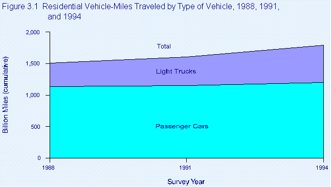
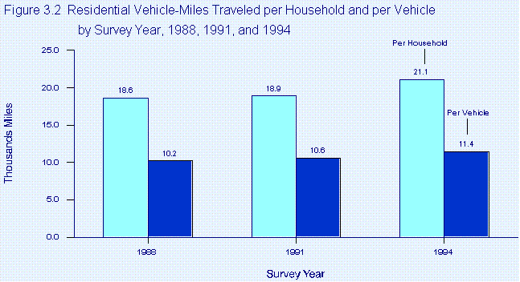
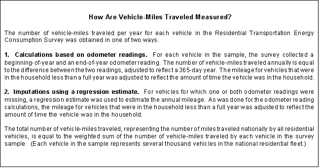
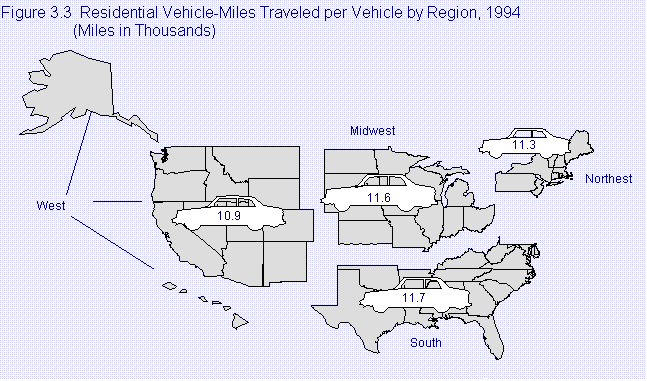
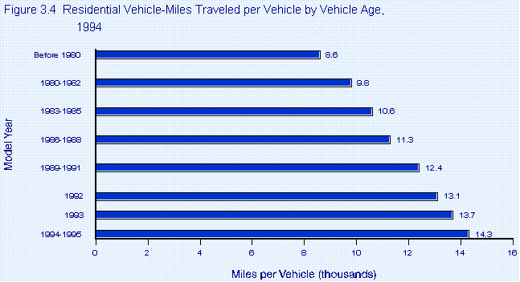
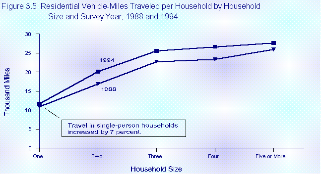
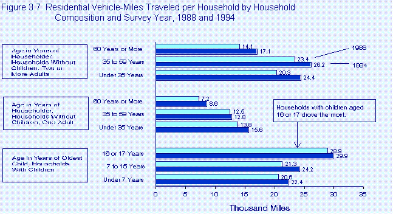
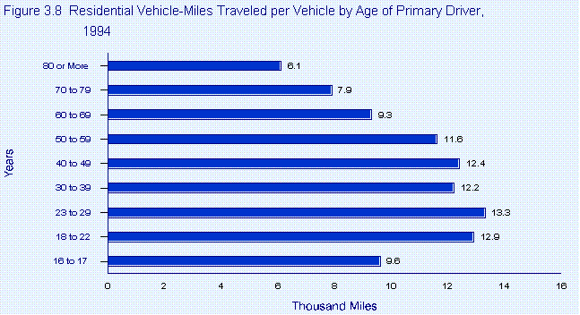
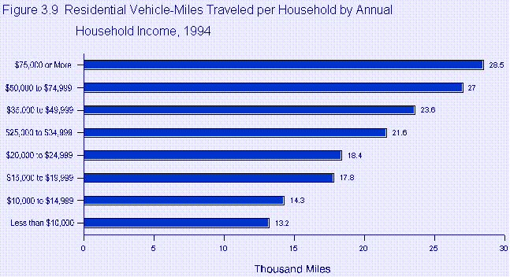
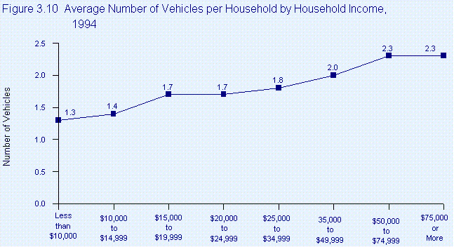

EIA Home > Transportation Home Page > Chapter 3. Vehicle-Miles Traveled
Chapter 3. Vehicle-Miles TraveledVehicle-miles traveled--the number of miles that residential vehicles are driven--is probably the most important information collected by the Residential Transportation Energy Consumption Survey. Using the data on vehicle-miles traveled allows analysts to answer such questions as: "Are minivans driven more than passenger cars?" "Do people in the West drive more than people elsewhere?" "Do people conserve their new cars by driving them less?" "Who drives more--people in households with children, or other people?" "At what ages do people drive the most?" "How does growing income affect the amount of driving?" In addition to answering those kinds of questions, analysts also use the number of vehicle-miles traveled to compute estimated, on-road vehicle fuel consumption, economy, and expenditures, all of which have important implications for U.S. energy policy and national security (see Chapter 4). The Number of Vehicle-Miles Traveled Continued To Rise In 1994, U.S. residential vehicles traveled 1,793 billion miles (Figure 3.1), a distance equal to more than 70 million trips around the world. The amount of travel in 1994 was 282 billion miles more than in 1988. From 1988 through 1994, the average annual growth in the number of miles traveled was 2.9 percent, almost 3 times the rate of growth in the number of residential vehicles during that period. START HERE Sources: 1988--Energy Information Administration (EIA), Household Vehicles Energy Consumption 1988, DOE/EIA-0464(88) (Washington, DC, February 1990), Table 12 1991--EIA, Household Vehicles Energy Consumption 1991, DOE/EIA-0464(91) (Washington, DC, December 1993), Table 14. 1994--Table 5.7 in this report. An average vehicle, therefore, traveled farther in 1994 than in 1988: 11,400 miles per year compared with 10,200 miles per year (Figure 3.2). Because the number of vehicles per household remained steady at about 1.8 from 1988 through 1994, per-vehicle and per-household mileage grew at about same rate. The per-household average rose from 18,600 miles in 1988 to 21,100 miles in 1994.  Sources: 1988--Energy Information Administration, Household Vehicles Energy Consumption 1988, DOE/EIA-0464(88) (Washington, DC, February 1990), Tables 14 and 18. 1991--EIA, Household Vehicles Energy Consumption 1991, DOE/EIA-0464(91) (Washington, DC, December 1993), Tables 16 and 20. 1994--Tables 5.9 and 5.15 in this report. But while the number of miles traveled and the number of residential vehicles increased, the total amount of paved and unpaved roadway remained at about 3.9 million miles.(1) Most construction was aimed at improving, rather than extending, the existing roadway system, about 40 percent of which was unpaved as of 1994. In 1988, the average mile of roadway was traveled by residential vehicles 1,066 times per day. In 1994, the number was 1,257, about 18 percent higher. (Because residential vehicles make up only about four-fifths of the U.S. total fleet, there was, in fact, substantially more total travel per mile of roadway.) These figures provide some indication of the increase in traffic congestion over the period. 
Miles Traveled by Light Trucks Increased the Fastest Largely because light trucks' share of the residential fleet increased from 1988 to 1994, the number of miles traveled by light trucks, rather than passenger cars, accounted for most of the increase in residential vehicle-miles traveled. Light trucks traveled 56 percent more miles in 1994 than they had in 1988, attaining an average growth rate of 7.8 percent per year. By comparison, the number of vehicle-miles traveled by passenger cars did not show a statistically significant change. Light trucks' share of total vehicle-miles traveled rose from one-fourth in 1988 to one-third in 1994. The increase was the result of two factors. Light trucks comprised a larger share of the residential fleet in 1994. In addition, two segments of the light truck fleet--minivans and sport utility-vehicles--were driven more miles per year per vehicle than were passenger cars. Minivans Were Driven the Most Minivans, which are owned primarily by families with children, tend to be driven more than other types of vehicles. In 1994, the average minivan was driven 13,400 miles, substantially more than the number of miles traveled, on average, by passenger cars, pickup trucks, and large vans. In general, households with children reported a higher number of vehicle-miles traveled than did other households (see section on "Inside the Average U.S. Household: Who Drives Most?"). Similarly, of the two types of passenger cars, station wagons were used more on average than were sedans. The average station wagon covered 12,100 miles in 1994, compared with 11,200 miles traveled by the average sedan. Vehicles in the West Were Not Driven More Than in Other Regions It seems reasonable that people living in the "wide-open spaces" of the West would drive more than people living in urban areas of the West and in other regions of the country. However, the average number of miles traveled per vehicle in the West, 10,900 miles, was comparable to the average for the rest of the United States (Figure 3.3). That average was slightly lower than the averages in the South and the Midwest, but not statistically different from the average in the Northeast. The national average was 11,400 miles per vehicle in 1994.  Source: Table 5.15 in this report. However, the vehicle-miles-traveled averages may have masked significant variations in State and local areas, such as the less populous States located in the West. Other Energy Information Administration data sources, most notably, State-level motor gasoline consumption estimates, suggest wide variability in fuel use per capita. For example, motor gasoline consumption in the most fuel-intensive State (Wyoming) is more than twice that of consumption in the least-intensive State (New York). However, even in sparsely populated States such as Wyoming, most of the population lives in urban areas, so that a large part of personal travel could be local. Why then would motor gasoline use per capita vary so widely? There are good reasons why per capita motor gasoline consumption may not be directly correlated with per capita vehicle-miles traveled. Estimates of total motor gasoline consumption could be greatly influenced by tourists visiting the State in numbers that are many times the size of the resident population. In addition, some western States with small populations have major cross-country interstate highways passing through. Vehicles traveling on such highways consume motor gasoline that is then counted in that State's consumption. Tourists and through traffic, largely unassociated with travel by State residents, would have the greatest relative effect on per capita ratios in States with large geographic areas and small populations. As an example, in 1994 over 7 million people visited Wyoming with its population of 476 thousand, according to the Wyoming Department of Tourism. In order for tourism to have had the same relative effect in California, almost everyone in the United States would have had to have visited California nearly two times in 1994. New Vehicles Are Driven More than Older Vehicles Vehicle age is closely correlated with the number of miles traveled: the newer the vehicle, the more miles it is driven, on average (Figure 3.4). In 1994, the newest vehicles (model years 1994 and 1995(2)) were driven 14,300 miles, about 1.7 times as much as were the oldest vehicles (model years earlier than 1980, that is, vehicles at least 14 years old in 1994).  Source: Table 5.15 in this report. However, the difference between the number of miles traveled by the oldest and newest vehicles became much less pronounced in 1994 than it had been in 1988. In 1988, the newest vehicles were driven 12,900 miles, more than twice as much as were the oldest vehicles (those more than 14 years old in 1988). The likely explanation for this trend is that the oldest vehicles remaining in the residential fleet in 1994 were relatively newer, more fuel efficient, and probably more reliable than were the oldest vehicles in the 1988 fleet. Who Drives the Most? People in the average U.S. household in 1994 drove their vehicles 21,100 miles, far enough to travel from New York City(3) to San Francisco seven times. That number, however, represents the average of about 85 million U.S. households with vehicles in 1994, and the average masks significant variation. For example, typical householder A, an older person whose children had left home, drove only 8,600 miles in 1994. That same year, people in typical household B, which included teenagers of driving age, drove 29,900 miles. And people in household C, which also included teenagers of driving age and which had an income of $50,000 or more, drove 40,200 miles. By comparing data on vehicle-miles traveled per household with details about household size, composition, and income,(4) analysts can correlate the number of miles driven per household with factors such as how many people make up the household, how many children live in the household, and how much money the household earns. The Residential Transportation Energy Consumption Survey is the only source of that information. Miles Driven Per Household Increased As explained in the previous section, in 1994, the number of vehicles per household, 1.8, was about the same as it had been in 1988, so that per-household mileage increased at the same rate as per-vehicle mileage. In 1988, the per-household average was 18,595 miles, compared with the 21,100 miles averaged in 1994. People in households of all sizes drove more in 1994 than in 1988 (Figure 3.5). The difference between miles traveled in 1988 versus 1994 was dwarfed by the difference between miles traveled in the smallest households versus the largest. Travel in single-person households averaged 11,600 miles in 1994, about 800 miles more than in 1988. Travel in the typical household of four averaged 26,600, about 3,300 miles more than in 1988 but 15,000 more than the smallest households.  Sources: 1988--Energy Information Administration, Household Vehicles Energy Consumption 1988, DOE/EIA-0464(88) (Washington, DC, February 1990), Table 7. 1994--Table 5.2 in this report. As would be expected, the number of drivers in the household was an even more important influence on the number of miles traveled than was on the size of the household (Figure 3.6). Having three people in the household raised the number of vehicle-miles traveled by a factor of 2.2. Having three drivers in the household raised the number by a factor of 2.7. People in the average household with three drivers covered 33,100 vehicle-miles in 1994.
Sources: 1988--Energy Information Administration, Household Vehicles Energy Consumption 1988, DOE/EIA-0464(88) (Washington, DC, February 1990), Table 7. 1994--Table 5.2 in this report. Teenagers in the Household Boosted Miles Traveled In general, people in households with children drive more, and those with driving-age children traveled the most vehicle-miles of any category in 1994: 29,900 miles (Figure 3.7). First, the presence of children of driving age tends to increase the number of drivers in the household and, therefore, to increase the number of vehicle-miles traveled. Secondly, older children may create additional travel demands than do younger children. In households with younger children, the number of vehicle-miles driven is similar to the number of miles driven in households with two or more adults with no children and in which the householder is younger than 60. In fact, households with two adults or more registered the greatest 1988-to-1994 increase in the number of vehicle-miles traveled.  Note: Household composition refers to the number and ages of people in the household. Sources: 1988--Energy Information Administration, Household Vehicles Energy Consumption 1988, DOE/EIA-0464(88) (Washington, DC, February 1990), Table 14. 1994--Table 5.9 in this report. Older Drivers Cover Fewer Miles Each residential vehicle has a primary driver. With the exception of 16- and 17-year-olds, primary drivers older than 49 generally drive their vehicles fewer miles than do primary drivers younger than 50 (Figure 3.8). After age 49, the older the primary driver, the fewer were the vehicle-miles traveled per year in general. As primary drivers, those 80 years and older averaged 6,100 miles per vehicle per year. The 16-year-old to 17-year-old age group averaged 9,600 vehicle-miles per year. Among the four age groups (drivers of age 18 through 49), the differences in number of vehicle-miles traveled per year were not statistically significant.  Source: Table 5.15 in this report. Higher Income Correlates with More Driving In general, higher income is correlated with more vehicle-miles traveled per household (Figure 3.9). Annual household income of $50,000 or higher, when coupled with the presence of teenagers of driving age in the household, boosted average vehicle-miles traveled per household to 40,200 miles in 1994. And in households with that income and with two or more adults and no children, vehicle-miles traveled averaged nearly 27,400. By comparison, in those households with annual income below $10,000, vehicle-miles traveled averaged only 13,200.  Source: Tables 5.2 in this report. Household income does not correlate appreciably with the number of vehicle-miles traveled per vehicle. However, there is a correlation between household income and the number of vehicles per household (Figure 3.10). High-income households tend to have more vehicles and thus a higher per-household average of vehicle-miles traveled. It is important to note that, in general, there is a positive correlation between higher household income, older age of head of household, a greater number of drivers, and an increased likelihood that the household will include children of driving age--all factors associated with a higher number of vehicle-miles per household. Households that include children 16 or 17 years old tend to have an older head of household. Older householders tend to have been in the work force longer, to have a correspondingly higher income, and to have more vehicles. For example, households with annual incomes of $50,000 or higher have nearly twice as many vehicles as do households with annual incomes below $10,000.  Source: Table 5.2 in this report. 1. 1988--Federal Highway Administration (FHA), Highway Statistics 1988, FHWA-PL-98-003 (Washington, DC, September 1989), Table DL-1B. 1994--FHA, Highway Statistics 1994, FHWA-PL-95-042 (Washington, DC, October 1995), Table DL-1B. 2. The 1994 residential vehicle fleet included a small number of 1995 model year vehicles. 3. Energy Information Administration calculation based on mileage from New York City to San Francisco of 2,946, as cited in Rand McNally & Company, Rand McNally Motor Carriers' Road Atlas 1991, p. 148. 4. The 1993 household data used in this report are collected by the Residential Energy Consumption Survey, another end-use consumption survey conducted by the Energy Information Administration. File Last Modified: February 1, 2002If you are having any technical problems with this site, please contact the EIA Webmaster at wmaster@eia.doe.gov |